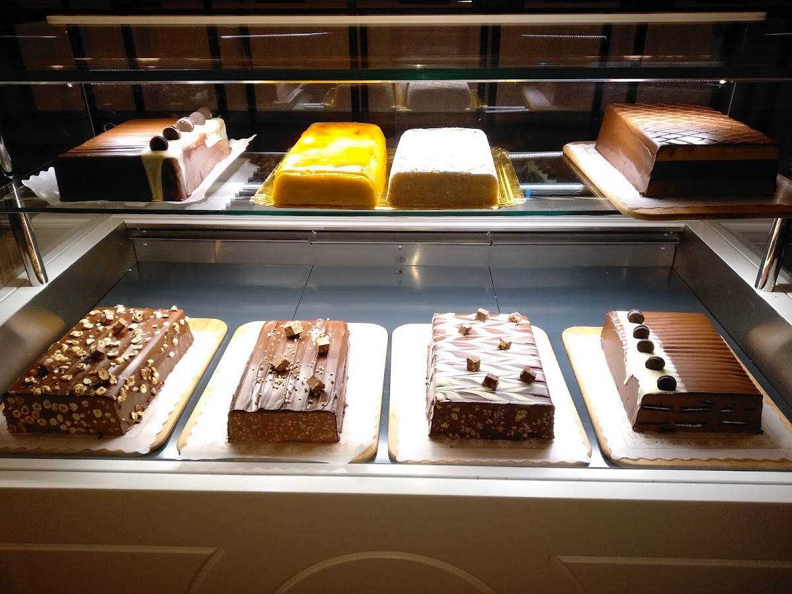
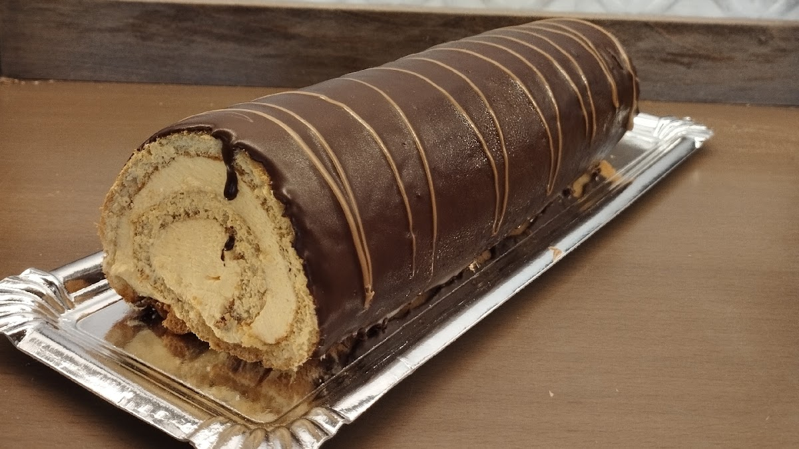

01
Magdalenas
La debilidad de la casa. Esponjosas, con ese copete dorado que solo sale cuando se bate a mano.
Tres generaciones levantándonos a las cuatro para que a las ocho y media tengas en el mostrador el pan, las magdalenas y las pastas de toda la vida.

Las mismas recetas, con los mismos ingredientes de siempre. Todo sale de nuestro obrador, no de una fábrica.
La debilidad de la casa. Esponjosas, con ese copete dorado que solo sale cuando se bate a mano.
Las pastas «de toda la vida» y las raquetas de siempre, para el café de media mañana o la merienda.
El hornazo de Salamanca que se hizo famoso hasta en La Resistencia. Por encargo, recién hecho.
Barras y panes de masa madre, con fermentación larga y corteza crujiente. Horneados cada día.
Chocolate, limón, nata… Para cumpleaños, celebraciones o porque apetece. Se encargan con un día.
Frutos secos de Zamora, huevos de León, miel de Villaseco de los Gamitos y obleas de Cipérez.

Aprendimos a hacer pan viendo a nuestros abuelos.
Nuria y José Antonio Vicente llevan 27 años en el mismo local, pero la historia empieza mucho antes, en el pueblo, con los abuelos. De ellos pasó a los padres y de los padres a ellos: tres generaciones en el obrador.
Llegan a las cuatro de la mañana. Amasan, hornean, atienden el mostrador y reparten los encargos. Se saben el nombre de cada cliente que entra por la puerta, y hay quien viene solo por el pan.
| Lunes | 8:30 – 14:45 |
|---|---|
| Martes | Cerrado |
| Miércoles | 8:30 – 14:45 |
| Jueves | 8:30 – 14:45 |
| Viernes | 8:30 – 14:45 |
| Sábado | 8:30 – 14:30 |
| Domingo | 8:30 – 14:30 |
Los encargos de tarta y hornazo, mejor con un día de antelación: 923 23 48 59.
37005 Salamanca · Barrio Garrido
Llámanos y lo dejamos preparado. Si vienes antes de las nueve, todavía huele a horno.
923 23 48 59